6.824 的第四篇论文是 Raft——一种基于多数原则的用于管理复制日志的共识算法。在容错性和性能方面，它相当于 Paxos，但比 Paxos 更易于理解，也为构建实际系统提供了更好的基础。
背景
一直以来，在共识算法方面，无论工业还是教学领域，Paxos 均占据主导地位，大多数共识的实现都基于它。但 Paxos 很难理解，且其架构需要进行复杂的更改才能支持实际系统。
Raft 算法的主要目标是为了提高可理解性，又能提供与其他算法相近的效率。虽然它在很多方面与现有的共识算法类似，但它具有以下几个新特性：
- 强领导：Leader 具有更强的话语权，Entry 仅从 Leader 流向其他服务器。这简化了复制日志的管理，并使 Raft 更容易理解。
- 领导人选举：Raft 使用随机 timer 来选举 Leader。这简单快速地解决了冲突，代价只是添加了少量机制。
- 成员变更：Raft 使用了一种新的联合共识方法，这允许集群在配置更改期间继续正常运行。
复制状态机
复制状态机指的是一组机器计算相同状态的相同副本，并且即使某些服务器停机也可以继续运行，通常使用复制日志实现，如下图所示。
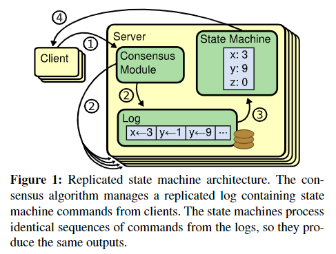
日志 LOG：包含一系列命令，所有服务器日志中的命令及其顺序均相同；
状态机 STATE MACHINE：按序处理命令序列，由于命令序列都是一致的，故执行的结果都是一致的；
共识模块 CONSENSUS MODULE：接收来自客户端的命令并将它们添加到其日志中，它与其他服务器上的共识模块通信，以确保每个日志最终包含相同顺序的相同请求，从而保持复制日志的一致性。
即使某些服务器出现故障，一旦命令被正确复制，每个服务器的状态机就会按日志顺序处理它们，并将输出返回给客户端。
Raft 实现
关于 lab2 Raft 的具体实现请参考这篇文章。
Raft 的核心就是下面这张图了。
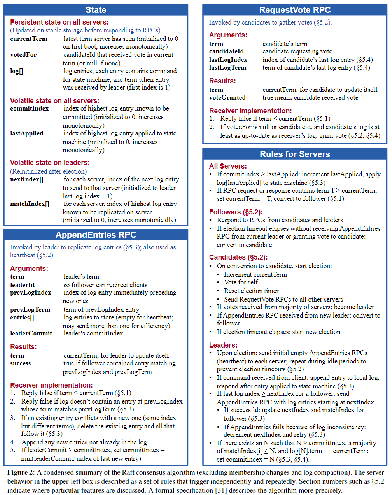
另外，Raft 还保证以下属性：
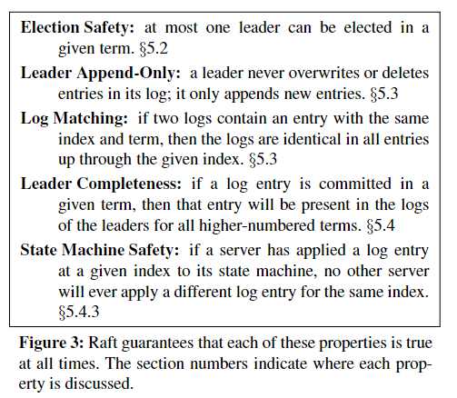
上面两张图是 Raft 的重中之重。
一个 Raft 集群包含多个服务器。任意时刻，每个服务器都处于三种状态之一： Leader 、 Follower 或 Candidate。Raft 首先选举出一个 Leader ，然后令其全权负责管理复制日志。正常情况下，每个集群只有一个 Leader，其他服务器都是 Follower。
- Leader：处理所有客户端请求，打包为 Entry 后将其复制到其他服务器上，并告诉服务器何时可以安全地将 Entry 应用到它们的状态机。
- Follower：被动响应 Leader 和 Candidate 的请求。如果超时未响应消息，则转为 Candidate；
- Candidate：向其它节点发起选举投票请求，以成为 Leader；
下图显示了不同状态之间的迁移过程：
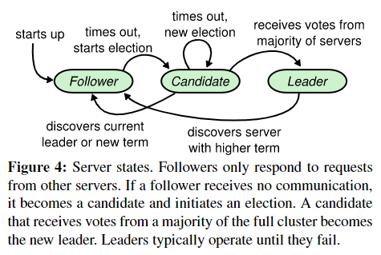
Raft 将时间划分为任意长度的任期 Term，如下图所示。
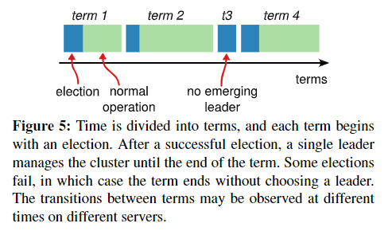
Term 用连续的整数编号。每个 Term 都以选举开始。Term 在 Raft 中充当逻辑时钟，允许服务器检测过时的信息。为此，每个服务器存储一个 CurrentTerm 变量，并在进行通信时交换该变量以保证一致性。一旦收到的消息中包含更新的 Term，服务器会将 CurrentTerm 更新为较大的那个，并转换为 Follwer。
基于上述讨论，Raft 将共识问题分解为以下三个相对独立的子问题。
Leader 选举
Raft 使用心跳机制来触发 Leader 选举。每个服务器初始化为 Follwer。Leader 定期向所有 Follower 发送 Heartbeat（特殊 AppendEntries RPC，不携带日志Entry），以维护自己的权威。只要服务器收到来自 Leader/Candidate 的有效 RPC，它就会保持 Follwer 状态；否则，如果 Follwer 在 ElectionTimeOut 时间内没有收到任何通信，那么它会认为没有 Leader 并发起选举。
为了开始选举，Follwer 首先增加其 CurrentTerm 并转换至 Candidate。然后它为自己投票并向集群中的每个其他服务器并行发出 RequestVote RPC。这段时间内，可能有以下三种情况会发生：
Candidate 收到集群中同一 Term 下多数服务器的同意回复，则成功当选 Leader，并立即发送一轮 Heartbeat；
多数规则确保最多一个 Candidate 可以赢得特定任期的选举。
集群中的另一服务器当选 Leader，此时 Candidate 可能会收到 Heartbeat/AppendEntries 消息，如果消息捎带的 Term >= CurrentTerm，则其退为 Follwer；反之，拒绝该消息并保持 Candidate 状态。
出现分裂投票导致选举超时未成功，则重新开始选举。为了防止该情况无限重复，Raft 使用随机 ElectionTimeOut 来解决——这在大多数情况下只有一个服务器会首先超时。同样的，每个 Candidate 在选举开始时重新随机其 ElectionTimeOut，这减少了在新选举中再次出现分裂投票的可能性。
日志复制
日志的组织方式如下图所示。每个日志 Entry 都存储一个命令以及 Leader 收到该 Entry 时的任期号。每个 Entry 还有一个 Index 标识其在日志中的位置。
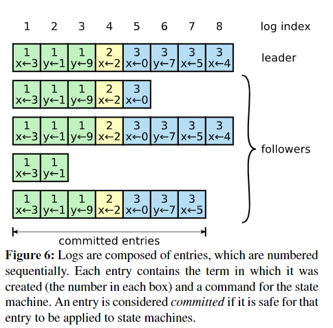
Raft 日志机制能够保证不同服务器上之间日志的高度一致性。这不仅简化了系统的行为并使其更具可预测性，而且还是确保安全的重要组成部分。 Raft 保证以下日志匹配属性：如果不同日志中的两个 Entry 具有相同的 Index 和 Term，则它们存储相同的命令，且之前所有的 Entry 都是相同的。
但 Leader 崩溃可能会导致日志不一致，比如下图这种情况。
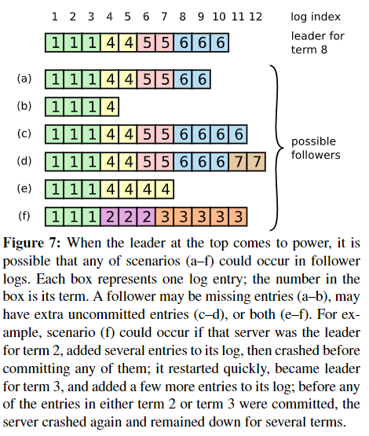
此时需要一些机制。Raft 的做法是令 Follower 无条件服从 Leader 的日志。使用这种机制，服务器当选 Leader 后无需要采取任何特殊措施来恢复日志一致性，因为日志会随时间自动收敛。
日志复制流程如下：
Leader 将每个客户端请求中包含的命令作为新 Entry 附加到其日志中，然后向其他服务器并行发出
AppendEntries RPC以复制日志，AppendEntries RPC捎带第一个新 Entry 的PrevLogIndex和PrevLogTerm；事实上 Leader 并不会每次都发送所有 Entry，而是会为每个 Follower 维护一个
nextIndex，表明 Leader 将发送给该 Follower 的下一个 Entry 的 Index。当一个节点首次当选 Leader 时，它会将所有nextIndex值初始化为它最后一个 Entry 的下一个 Index。如果 Follwer 在其日志中没有找到
Index == PrevLogIndex && Term == PrevLogTerm的 Entry，它会拒绝该消息。收到拒绝后，Leader 减少nextIndex并重试AppendEntries RPC。最终nextIndex将达到 Leader 和 Follower 日志匹配的点；在这样的一致性检查下，每当
AppendEntries成功返回时，Leader 就知道 Follower 的日志已与自己的日志同步。如果需要，可以优化协议以快速定位 nextIndex。例如，当拒绝 AppendEntries 请求时，Follwer 可以包括冲突 Entry 的 Term 和日志里该 Term 的第一个 Index，这样一来，Leader 可以绕过该 Term 中的所有冲突Entry。
Follwer 通过 AppendEntries 一致性检查，删除日志中的所有冲突 Entry 并追加 Leader 日志中的 Entry，这样一来 Follower 的日志与 Leader 的一致，并且长久保持；
被复制到多数服务器的 Entry 会被 Leader 标为
Committed，Leader 将这部分 Entry Apply 于其状态机并将该执行的结果返回给客户端。所有服务器维护一个CommitIndex变量，表示其提交的最后一个 Entry 的索引，Leader 会将该变量包含在将来的 AppendEntries RPC 中；一旦 Follwer 收到一个更大的
CommitIndex，说明有新的 Entry 已提交，它会按序将其 Apply 于其本地状态机。
日志复制机制使得只要大多数服务器正常运行，Raft 就可以接受、复制和应用新的日志 Entry。在正常情况下，一轮 RPC 即可将新 Entry 复制到集群的大多数，并且少数“短板”不会影响性能。
安全性
选举约束
Leader 最终必须存储所有 committed 的 Entry。Raft 保证所有来自之前 Term 的 committed 的 Entry 在选举时就存在于每个新 Leader 的日志中，无需将这些条目转移给领导者。这意味着 Entry 仅沿 Leader->Follower 方向流动，而 Leader 永远不会覆盖其日志中的现有条目。
为此，需对选举加入这一约束——Candidate 的 LastEntry 应与 Follower 的 LastEntry 一样新或更新，否则 Follower 拒绝其投票申请。这样能保证当选 Leader 的服务器日志比多数服务器新，也就包含了所有 committed 的 Entry。
如果日志的 LastEntry 具有不同的 Term，则具有 Term 大的的 Entry 更新；反之，Index 大的那个更新。
提交旧 Entry
Leader 知道一旦某一 Entry 存储在多数服务器上，它就会被提交。如果 Leader 在提交条目之前崩溃，新 Leader 将尝试完成复制条目。但新 Leader 不能立即断定上一 Term 的 Entry 是否存储在大多数服务器上且已提交。下图说明了一种情况，其中旧 Entry 存储在大多数服务器上，但可能被新 Leader 覆盖。
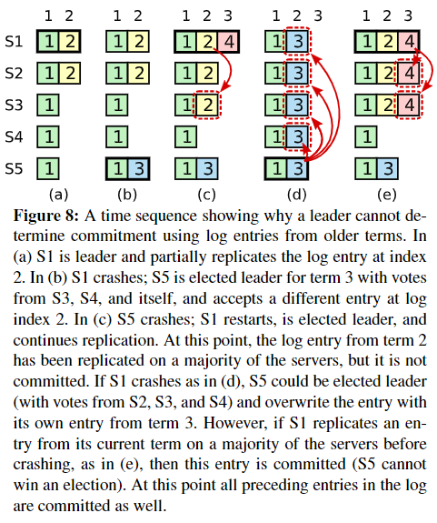
为了应对这一问题，Raft 规定只提交当前 Term 的 Entry，而不能提交旧 Term 的 Entry。一旦以这种方式提交了 Entry，则根据日志匹配属性，所有先前的 Entry 都将间接被提交。
这样一来，上图的 (c) 中尽管
Term 2 Entry已被复制到大部分服务器上，但因为 S1 的 Term 此时已变成了 4，不能提交Term 2 Entry，只有出现 (e) 这样的情况才能间接提交。而一旦出现 (d) 这种情况，Term 2 Entry并不会被提交，从而客户端检测到超时，后续会重新发送该命令，那么即便覆盖也不会出现问题。
Follower 与 Candidate 崩溃
如果一个 Follower/Candidate 崩溃了，那么未来发送给它的 RequestVote 和 AppendEntries RPC 将失败。Leader 将无限重试 RPC，一旦崩溃的服务器重新启动，则 RPC 将成功完成。如果服务器在完成 RPC 之后但在响应之前崩溃，那么它将在重新启动后再次收到相同的 RPC。考虑到 Raft RPC 是幂等的，所以这不会出现问题。
例如，如果 Follower 收到一个
AppendEntries RPC，其中包含已存在于其日志中的 Entry，则它会忽略这些 Entry。
集群成员变更
这一部分在 lab 中并未体现，但在 pingCAP 训练营中有涉及。
Raft 支持配置自动化更改并将其合并到 Raft 算法中。
为了使配置更改机制安全，在过渡期间不能存在在同一 Term 有两个 Leader 当选。不幸的是，任何切换配置的方法都是不安全的——不可能一次原子地切换所有服务器，因此集群在转换期间可能会分裂成两个独立的部分，如下图所示。
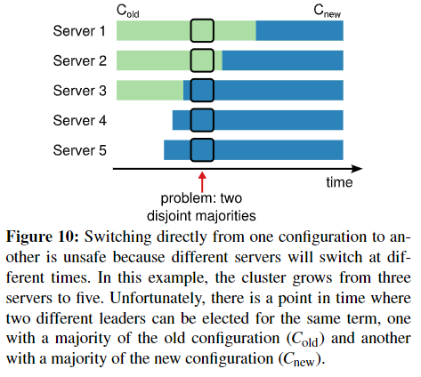
为了确保安全，配置更改必须使用两阶段的方法。在 Raft 中，集群首先切换到一种称为联合共识的过渡配置；一旦达到这一配置，系统就会过渡到新的配置。联合共识对新旧配置进行了结合：
- Entry 被复制到两种配置中的所有服务器；
- 来自任一配置的任何服务器都可以充当 Leader；
- 用于选举和提交 Entry 的协议需要来自 both 旧配置和新配置的不同多数派。
联合共识允许各个服务器在不同时间在配置之间转换，而不会影响安全性。此外，联合共识允许集群在整个配置更改期间继续为客户端请求提供服务。
日志压缩
实际系统中，Raft 日志不能无限增长。需要一种机制来丢弃日志中的过时信息，避免可用性问题。
这一机制就是快照(Snapshot)。下图描述了快照的基本思想。
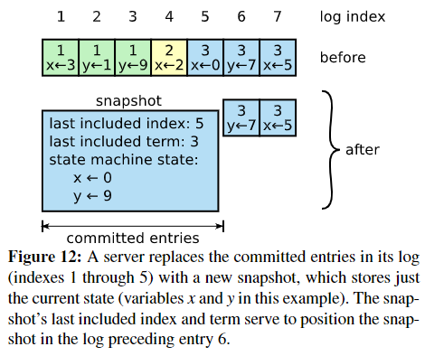
快照包含服务器当前状态，以及少量元数据：
- Last Included Index：快照覆盖的日志中最后一个 Entry（状态机 Apply 的最后一个 Entry）的 Index；
- Last Included Term：该 Entry 的 Term。
这些元数据用于对快照后的第一个 Entry 的 AppendEntries 一致性检查，因为该 Entry 需要 PrevLogIndex 与 PrevLogTerm。为了启用集群成员更改，快照还包括日志中截至 Last Included Index 的最新配置。一旦服务器完成写入快照，它可能会删除 Last Included Index 前的所有 Entry，以及任何先前的快照。
每个服务器独立建立快照，且仅覆盖其日志中已提交的 Entry，但当 Leader 因建立快照而丢弃了它需要发送给 Follower 的下一个 Entry 时，则必须使用一个名为 InstallSnapshot 的新 RPC 将其写入的最新快照发送给“短板” Follower，如下图所示。
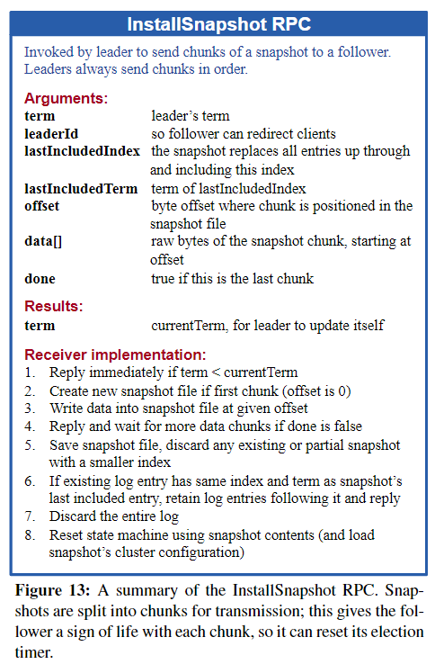
当 Follower 收到此 RPC 时：
- 如果 LastIncludedIndex >= Last Log Index of Follower，则 Follower 丢弃整个日志，并令其被快照覆盖；
- 相反，快照覆盖的 Entry 将被删除，但快照之后的条目仍然有效并且必须保留。
虽然这种机制与 Raft 的强领导者原则相违背，但在快照时已经达成共识，因此没有决策冲突。数据仍然只从 Leader 流向 Follower。
还有两个影响快照性能的问题：
服务器必须决定何时进行快照。如果快照过于频繁，则会浪费磁盘带宽和能量；反之，则可能会耗尽其存储容量，并且会增加重新启动期间重放日志所需的时间。
一种简单的策略是在日志达到固定大小（以字节为单位）时建立快照。如果此大小设置为明显大于快照的预期大小，则快照的磁盘带宽开销将很小。
写快照会花费大量时间。
解决方案是使用写时复制技术，这样可以在不影响正在写入的快照的情况下接受新的更新。例如，使用功能数据结构构建的状态机自然支持这一点，或者操作系统的写时复制支持（例如，Linux 上的 fork）可用于创建整个状态机的内存快照。
总结
论文的图 2 与图 8 值得细细品味。